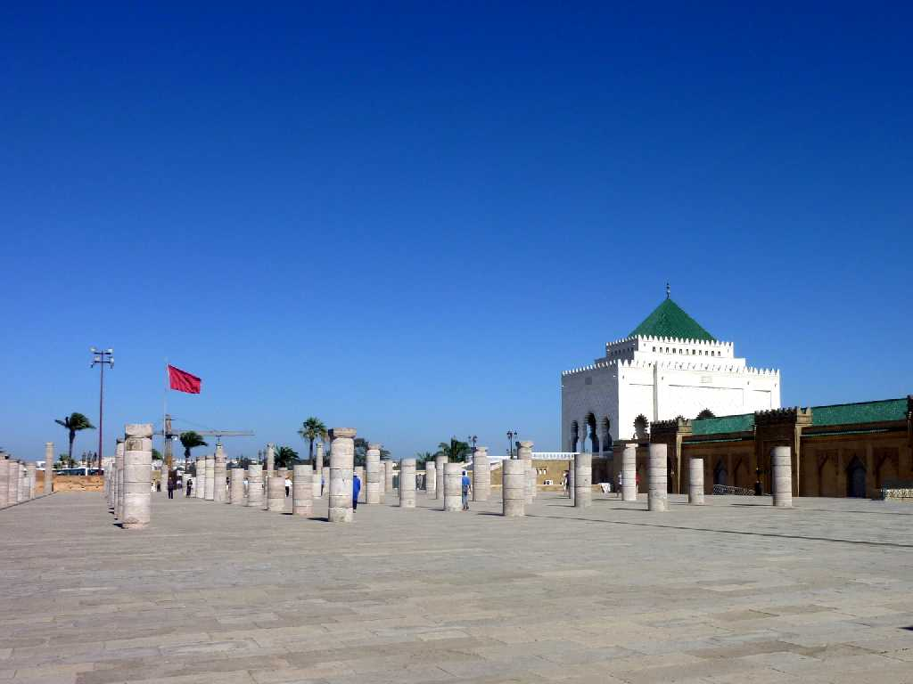
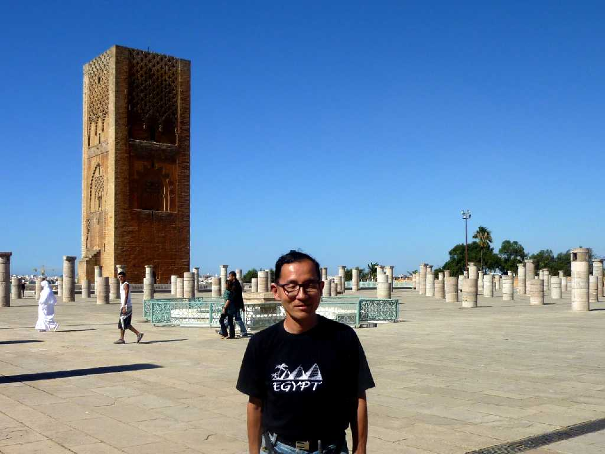
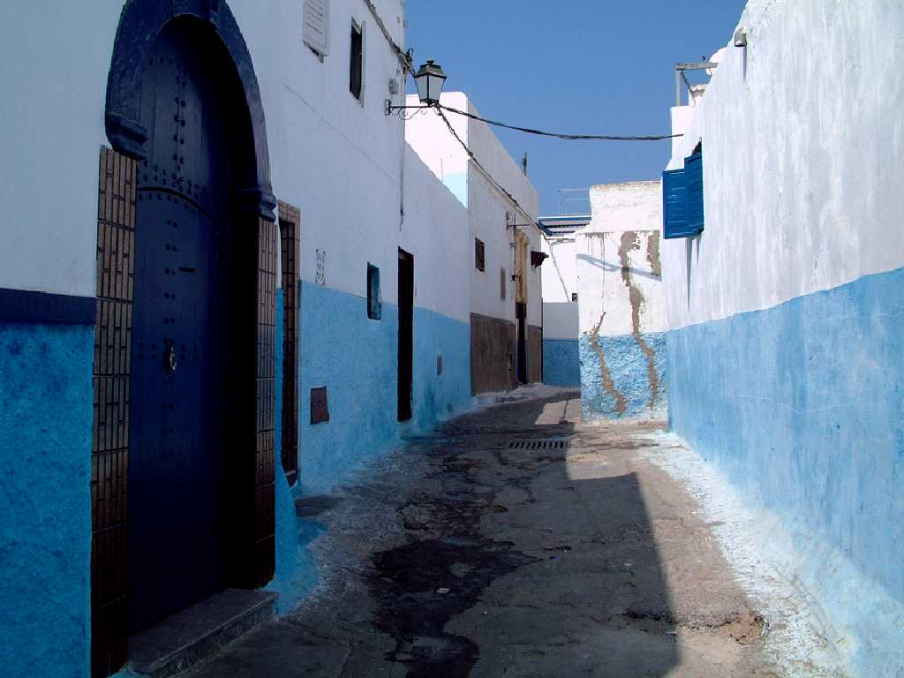
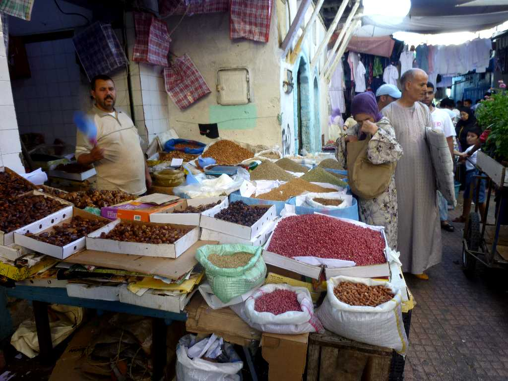
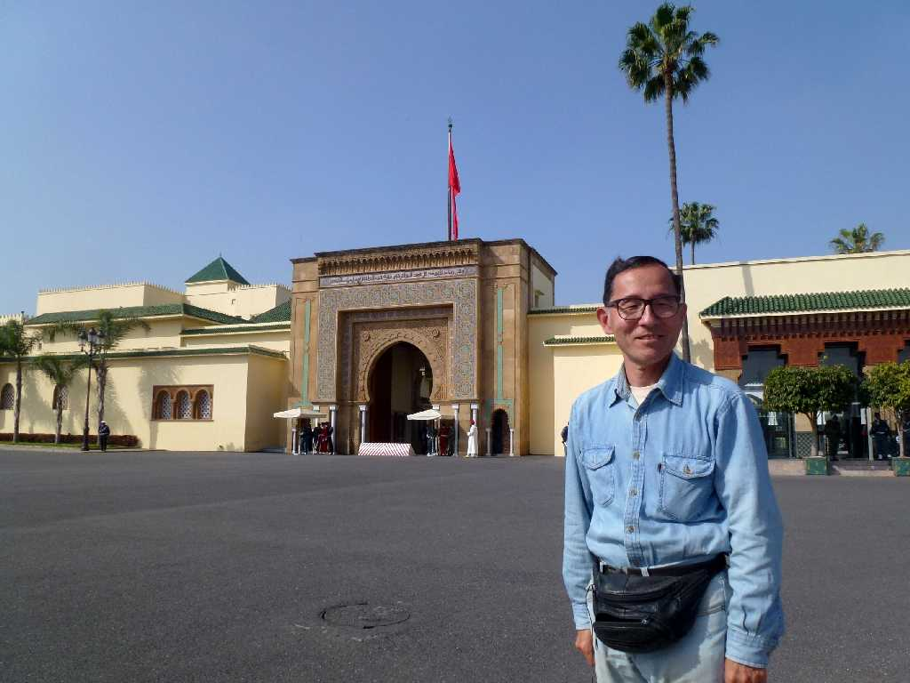
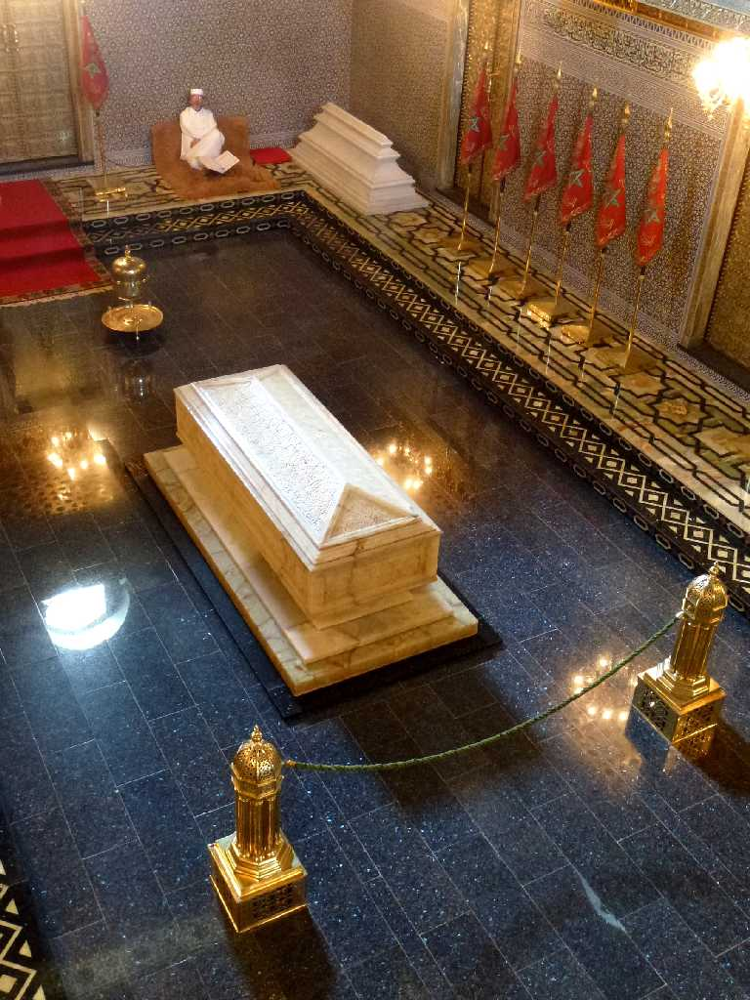

Mausolee Mohammed Ⅴ Rabat
モロッコが１９５６年にフランスから独立したときのムハマド５世王の霊廟

September 9 2010 Hassan Toren Rabat
ハッサンの塔は１１９５年にムワッヒド朝第３代スルタンのヤークーブ・マンスールにより着工したものだが４年後彼の死により中断したため計画の８８ｍのうち４４ｍが残っている 多くの石柱はモスクの基礎として造られ中断したもの

Kasbah Oudaya Rabat

Medina Rabat

March 19 2014 Royal Palace Rabat
世界一周クルーズ以来４年ぶりのラバト再訪問 今回は王宮等を訪れた

Mausolee Mohammed Ⅴ Rabat
今回はムハマド５世王の霊廟に入場することが出来た
最北西端スパルテル岬から始まったモロッコ周遊３,０００ｋｍバスの旅もここで完了